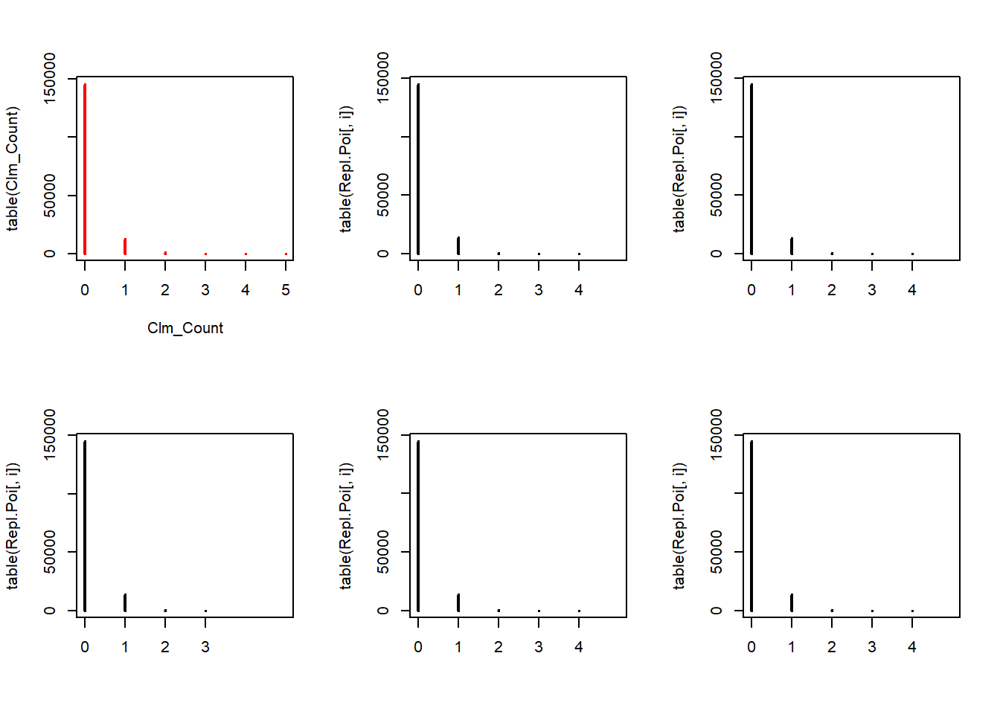
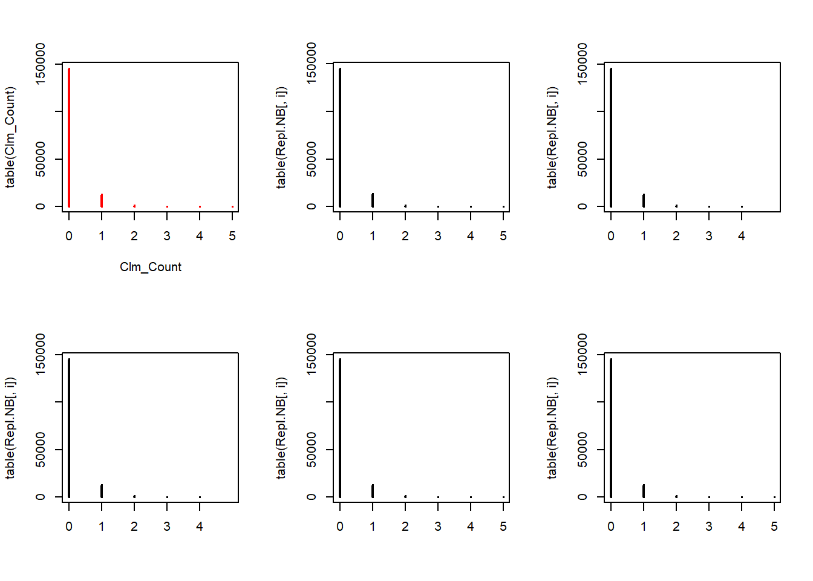
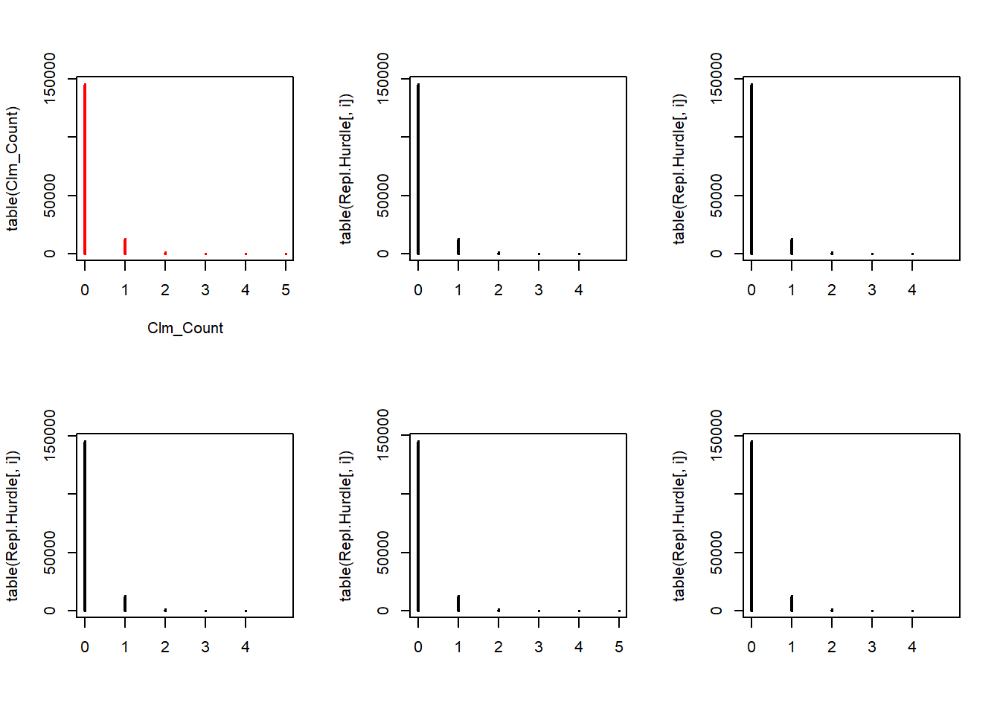

3 Replicating data sets
We now show how to generate replicating data sets based on each of these models. We generate 5 random samples of the same size as the original data set and using the estimated parameters. We then plot the contingency tables to compare.
3.1 Poisson
rpois allows us to generate from a Poisson distribution for any given positive lambda. We use the fitted lambdas, taking exposure into account. Notice that the length of argument lambda is \(n\) whereas we sample \(5n\) observations. rpois deals with this mismatch by recycling the lambdas \(5\) times. The resulting output vector is then used to form a matrix with \(5\) columns, filled by its columns (by default), such that each column contains a replicating data set.
n <- length(Clm_Count)
Repl.Poi <- matrix(rpois(n*5, lambda = poisson.lambda*TLength), c(n,5)) # or fitted(fm_pois) instead of Poi.lambda*TLength
par(mfrow=c(2,3))
plot(table(Clm_Count), col="red")
for(i in 1:5){
plot(table(Repl.Poi[,i]), xlim=c(0,5))
}
3.2 NB
rnbinom allows us to generate from a Negative Binomial distribution for a given mu and size. The rest is similar to the Poisson case.
Repl.NB <- matrix(rnbinom(n*5, mu = nb.mu * TLength, size = nb.a), c(n,5))
par(mfrow=c(2,3))
plot(table(Clm_Count),col="red")
for(i in 1:5){
plot(table(Repl.NB[,i]), xlim=c(0,5))
}
3.3 ZIP
To generate data from the ZIP distribution we first simulate Poisson distributed data. Afterwards we set each simulated value to zero with probability \(p\).
# install.packages('VGAM')
# install.packages('gamlss.dist')
Repl.ZIP <- matrix(rpois(n * 5, lambda = ZIP.lambda * TLength) * (runif(n * 5) > ZIP.p), c(n, 5))
par(mfrow=c(2,3))
plot(table(Clm_Count),col="red")
for(i in 1:5){
plot(table(Repl.ZIP[,i]), xlim=c(0,5))
}3.4 Hurdle Poisson
We first data from a Poisson distribution, where we discard all observations with zero claims. Afterwards we set for each observation to zero with probability \(p\).
initial.sim <- rpois(n * 50, lambda = Hurdle.lambda * TLength)
initial.sim <- initial.sim[initial.sim > 0]
Repl.Hurdle <- matrix(initial.sim[1:(n*5)] * (runif(n * 5) > Hurdle.p), c(n, 5))
par(mfrow=c(2,3))
plot(table(Clm_Count),col="red")
for(i in 1:5){
plot(table(Repl.Hurdle[,i]), xlim=c(0,5))
}